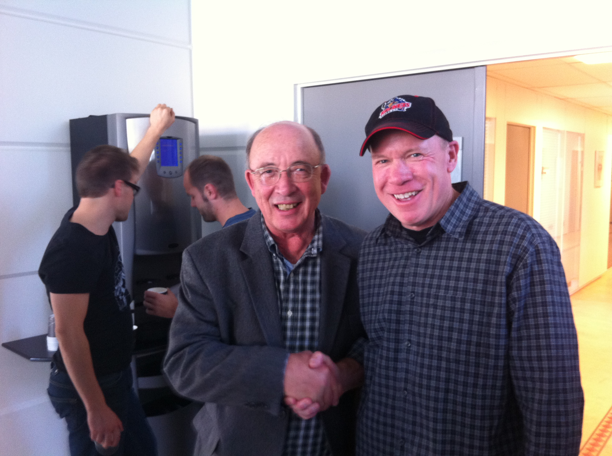
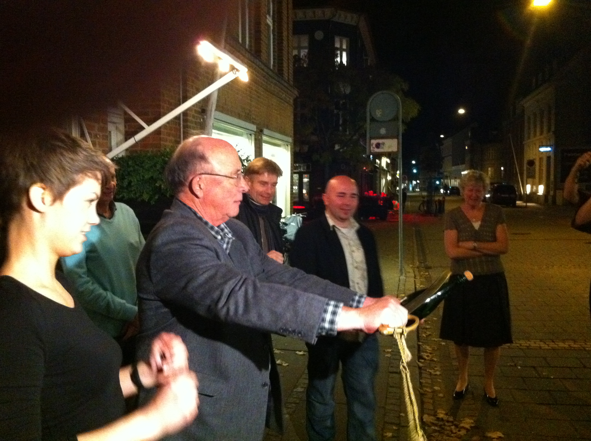
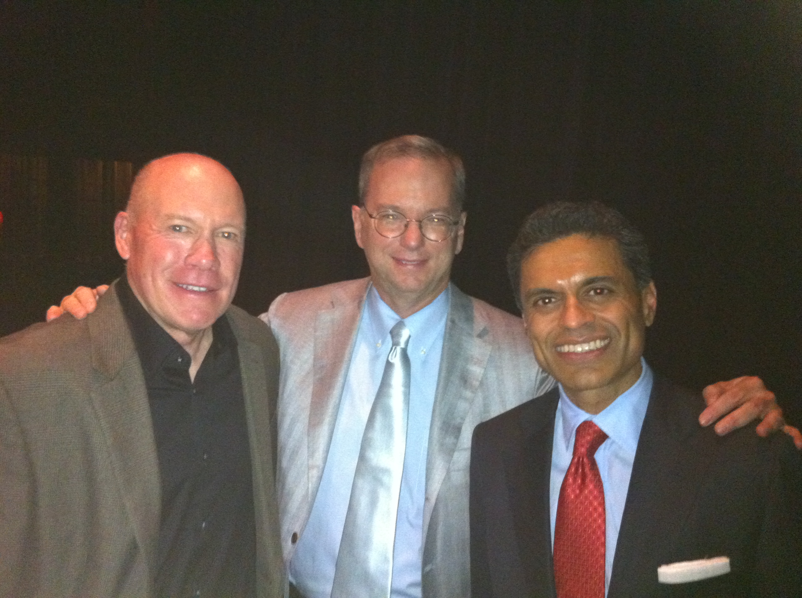

Other stuff
Here you will find various things
Dale and me!
As luck would have it, in 2010 Dale Mortensen had asked me to come to Aarhus University for a week. I arrived during the weekend and met up with Dale for some dinner and drinks. Dale was doing some teaching and there was a seminar as well on Monday. We were just at the seminar around lunch time when someone came into the room and told Dale there was a telephone call...yes, it was the Nobel committee informing him that he won a the prize (along with Peter Diamond and Chris Pissarides)! Wow! Rob Shimer and Rasmus Lentz were there as well. Dale, being Dale, toasted with champagne, then said, ok let's get to the seminar. The picture on the right was taken just a short time after the announcement. How cool is that!
Dale Mortensen
Dale on the night he won the Nobel Prize. He is opening a bottle of champagne with a sword: do not try this at home! The woman on the left was our server at the restaurant. Opening a bottle of champagne with a sword is a ceremonial thing I guess. Not really intuitive as to how to do it, but she is an expert and taught us. You DO NOT, I repeat, do not hack away at the top trying to chop it off. Instead you rest the flat part of the blade on the bottle with the top of the bottle pointing up as Dale is doing in the photo. Then slide the blade up along the bottle. The blade will hit the ridge on the top of the bottle and the top will separate and from the force of the champagne (like the cork) will shoot the top of the bottle a few feet. Did I mention don't try this at home?
Here I am with Eric Schmidt and Fareed Zakaria
I got to moderate a discussion with Eric and Fareed on social media and its impact. The discussion hit all kinds of topics from wars to China. We had a great dinner before the event at Bouchon and it did not take long to break into a lively discussion. Fareed started off with his story about being the last western journalist to interview Muammar al-Qaddafi. Then we discussed the Arab Spring and the influence of social media. It was not an easy task moderating as I was so fascinated with all they had to say. Eric spoke about issues with China and freedom.
Senator Alan Simpson and Erskine Bowles
 There was also an event with Senator Alan Simpson and Erskine Bowles that I moderated. Note that all of us wore ties! President Obama initiated the National Commission on Fiscal Responsibility and Reform and chose former Senator Alan Simpson and Clinton's former Chief of Staff, Erskine Bowles to head the commision. Overall, the plan they came up with was supported by many, but lacked the required votes in its own committee (wtf) to be implemented. It was a bipartisan plan that had some teeth it seemed. It included tax hikes as well as spending cuts. My view from speaking with them is that they were very disappointed with the fact that everyone praised it but not enough voted for it.
There was also an event with Senator Alan Simpson and Erskine Bowles that I moderated. Note that all of us wore ties! President Obama initiated the National Commission on Fiscal Responsibility and Reform and chose former Senator Alan Simpson and Clinton's former Chief of Staff, Erskine Bowles to head the commision. Overall, the plan they came up with was supported by many, but lacked the required votes in its own committee (wtf) to be implemented. It was a bipartisan plan that had some teeth it seemed. It included tax hikes as well as spending cuts. My view from speaking with them is that they were very disappointed with the fact that everyone praised it but not enough voted for it.